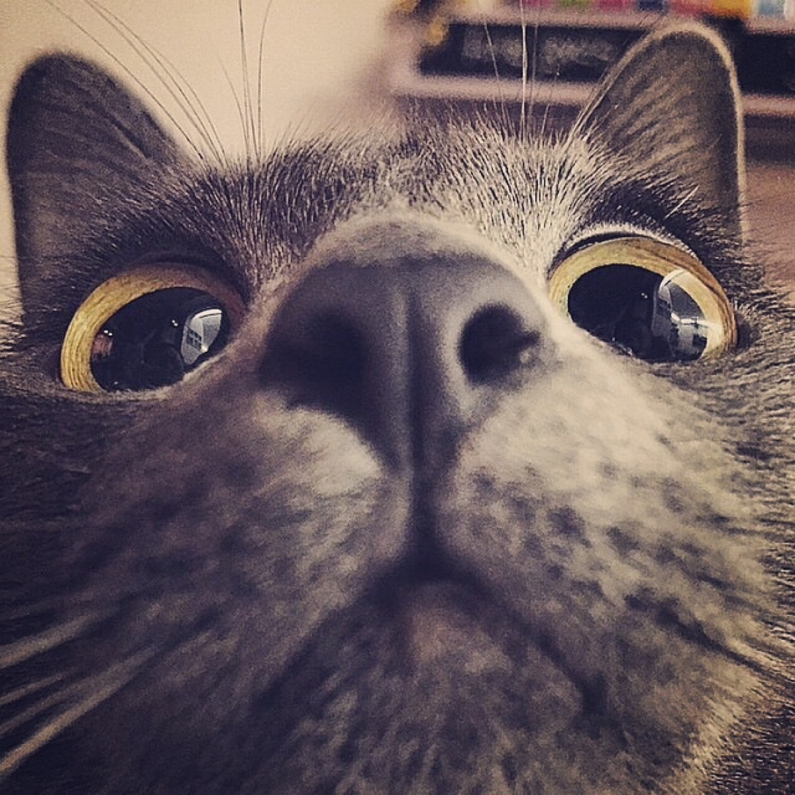

我叫林书豪
一位前端开发初学者
1472677055@qq.com
13905008115
自我介绍
1，有一定的，html，css，JavaScript知识基础。能够结合bootstrap独立进行简单的静态页面开发。并且根据需求进行修改。
2，对Jquery有一定的认识。能够独立使用Jquery进行简单的页面行为设计。
3，对ajax有简单的了解。对jason数据有简单的了解。
4，可以使用c语言结合单片机的特性进行简单的功能开发。
5，做事有条理。乐于与人沟通。
教育背景
- 通信原理
- 现代交换技术与原理
- 信号与系统
- 单片机原理与应用
- 数字信号处理
- 模拟电子技术
- 嵌入式技术
- MATLAB应用字
在校经历
2014.9-2017.6
校级足球俱乐部部长
校级足球俱乐部部长
2016.05-2016.6
本地数据采集上位机的设计
本地数据采集上位机的设计
2017.10-2018.2
基于wifi的无线智能家居系统
基于wifi的无线智能家居系统
2016.06-2016.07
基于stm32的双边通信实现
基于stm32的双边通信实现
兴趣爱好

希望能与您共事
//往后添加自己的项目吗